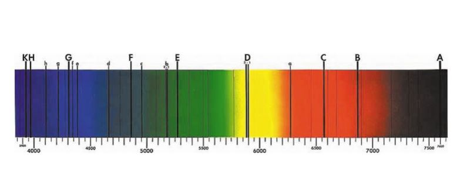

UNIT_ALPHA
凌日法：宇宙級的「擋光遊戲」！
想像一下，在漆黑的夜晚有一盞超亮的探照燈（恆星），如果有一隻小蚊子（行星）剛好飛過燈泡正前方，雖然你看不清那隻蚊子，但你會發現探照燈的亮度在那一瞬間稍微變暗了那麼一點點！
科學家發現，這種亮度隨時間變化所匯出的曲線，專業術語叫做「光變曲線」(Light Curve)。凌日法是目前發現系外行星數量最多的技術（著名的克卜勒太空望遠鏡 Kepler 就以此發現了數千顆行星），它不僅能偵測行星，還能讓我們測量行星的直徑。

SYS_OBJECT_SIZE
12.0
SYS_ORBIT_VEL
5.00
UNIT_BETA
從光影中解碼：行星有多大？
1. 它跑得有多快？公轉速度與軌道
如果光變曲線中的這個「坑」出現得很頻繁，代表這顆行星公轉速度很快。根據克卜勒第三定律，我們能從兩次凌日的時間間隔計算出行星的軌道半徑，這對判斷行星是否位在「適居帶」（生命可能存在的區域）至關重要。
2. 它是巨無霸還是小不點？
當行星擋住恆星的光時，變暗的程度（凌日深度）其實就洩漏了它的身材秘密！行星越大，遮住的光就越多，光度曲線掉下去的「坑」就越深。我們可以利用這個圓形幾何公式來回推出行星的半徑：
$$\text{亮度下降比例} = \left(\frac{\text{行星半徑}}{\text{恆星半徑}}\right)^2$$
.png)
UNIT_GAMMA
它的大氣層有什麼？光譜的指紋
大氣層的濾鏡： 當行星經過恆星前方時，恆星發出的光會穿過行星邊緣的大氣層。大氣中的化學分子（例如水蒸氣、氧氣、甚至甲烷）會吸收特定顏色的光。

科學家分析這道被「過濾」過的光，就像在掃描商品的「條碼」一樣，能分析出這顆遙遠行星是否有氧氣可以讓我們呼吸，或是充滿了有毒氣體。這就是光譜的指紋！
.jpg)

UNIT_DELTA
凌日法教具
在展場中，我們用燈箱代表恆星，並讓模型行星繞其運動。而 Arduino 就是我們敏銳的眼睛，捕捉肉眼難以察覺的細微光影閃爍！
怎麼讀取觀測到的光變曲線？
圖中的線由三個部分組成：
- 平坦的高線（基準光度）：代表平均光度，當行星沒遮到光時的亮度。
- 下陷的凹槽：代表行星正在遮住光，凹槽越深，行星體積越大！
- 凹槽的寬度：代表行星經過的時間，寬度越長，代表行星通過的時間越久，可以用來計算公轉速度與軌道距離。
所以，這張圖就像是行星的「身分證」，只要看這條線掉下去的深度跟長度，我們就能推算出它的大小與公轉秘密！